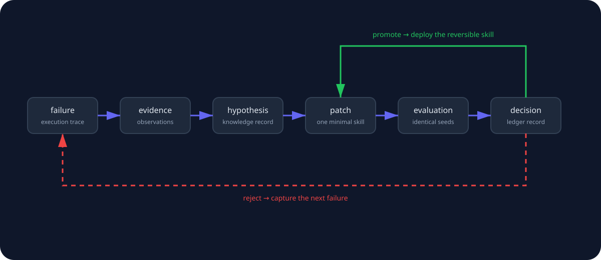

experience/Immutable observations
Append-only execution traces: the record of what happened.
A research harness for procedural learning
execution traces → evidence → persistent knowledge → candidate patch → independent evaluation → promotion / rejection.
Explore on GitHubThe compiler loop

Three stores, one invariant
experience/Append-only execution traces: the record of what happened.
knowledge/Evidence-backed knowledge records; supersede, never overwrite.
skills/Deployed procedural knowledge, changed only through provenance-tracked patches.
Research questions
Ablations compare raw recent traces with compiled knowledge.
Candidate skills are assessed against a held-out validation set.
Execution and learning contexts remain separated.
A cross-model transfer matrix executes every skill on every model.
How the harness works
A 50-scenario onboarding world: 30 train / 10 validation / 10 held-out. It exposes 8 tools—get_employee, get_policy, get_inventory, assign_device, create_procurement_request, grant_access, create_ticket, complete_onboarding—with deterministic final-state graders and fixed seeds. Every run captures token and cost metrics as evidence.
Current status
v0.1.0 released
All milestones M0–M6 shipped. Real-model (live LLM) experiments are next; the harness currently runs deterministically with a scripted fake model—no API key needed, no cost.
M5 + M6
Four configurations, with the held-out set never touched during training.
| Configuration | Context |
|---|---|
| baseline | no persistence |
| trace2skill | raw recent traces only |
| memory | knowledge in executor context |
| compiler | full pipeline |
Train a skill with each model, then execute every skill on every model. The skill-source × executor matrix tests whether skills encode environment knowledge or model compensations.
results/transfer-matrix.csv
The M6 output path for the transfer matrix.
Quickstart
uv sync
source .venv/bin/activate
exp version
exp run train
exp mine
exp propose onboarding
exp eval candidate-01
exp promote candidate-01
exp evolve --iterations 10
exp compare
exp matrix --models fake --iterations 1
exp report